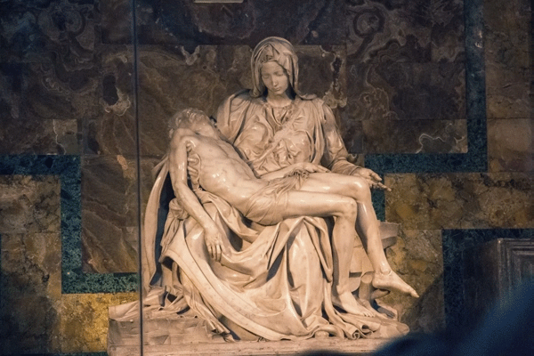
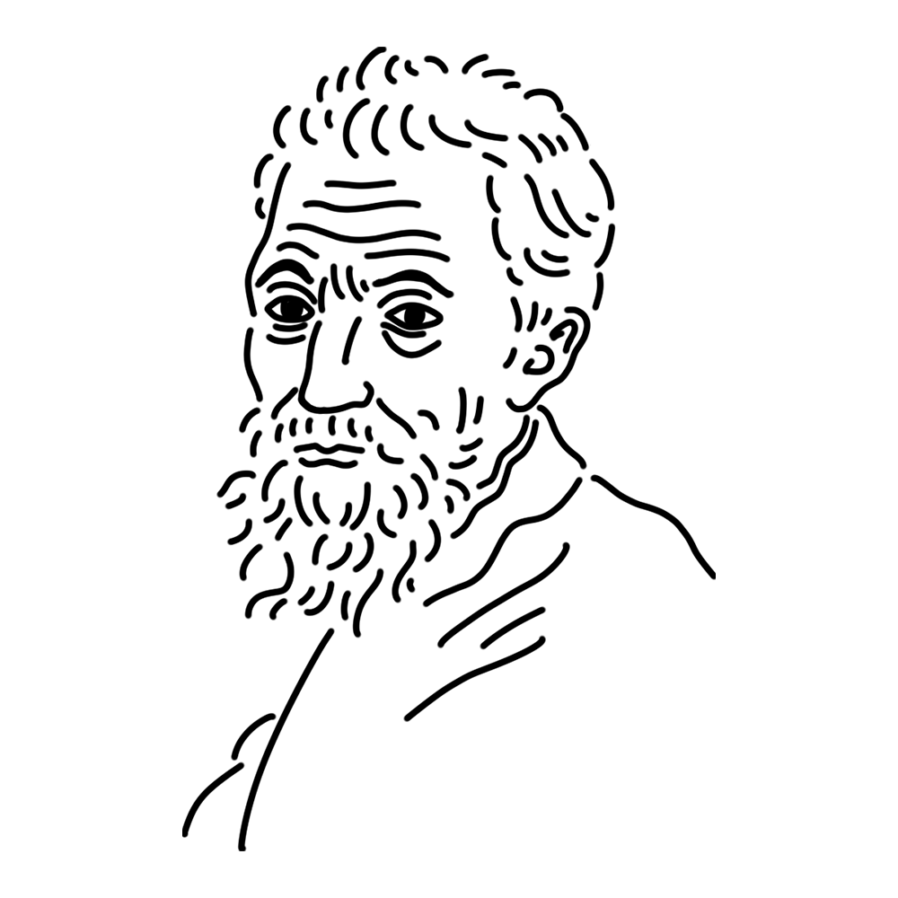

「万能人」と呼ばれ様々な分野で活躍するルネサンス期のミューズ。ガンコな気質の持ち主で、自分が納得できないなら法王の頼み事でも首を縦にはふらない。極度の風呂嫌いで、いつも臭っている……。
フィレンツェ共和国（現イタリア）
"ダヴィデ像"
"最後の審判"
"サン・ピエトロのピエタ" etc.

ミケランジェロが23歳の時に作り上げた傑作。ピエタとは「哀れみ」という意味のイタリア語で、キリストの死を嘆く聖母マリアを表現した美術作品を指す。丁寧に表現された人物の表情や肉体・衣服の質感は、大理石でできていることを忘れさせる。ちなみに、ミケランジェロのサインが入っている唯一の作品である。
制作年
1498-1500年
技法・材質
大理石
寸法
174 cm x 195 cm x 69 cm
所蔵
サン・ピエトロ大聖堂（バチカン市国）

ルネサンス期イタリアを代表する万能の天才。彫刻・絵画・建築など広いジャンルで才能を発揮し、とりわけシスティーナ礼拝堂の天井画は人類の奇跡とすら称されることも。生涯にわたり法王やメディチ家に仕え、時に衝突しつつも素晴らしい作品を残したプロフェッショナルでもある。一方でとても気難しい性格だったという記録も残っており、喧嘩で殴られ曲がったままになった鼻は生涯のコンプレックスだったという。
Michelangelo di Lodovico Buonarroti Simoni
1475年3月6日
1564年2月18日(88歳没)